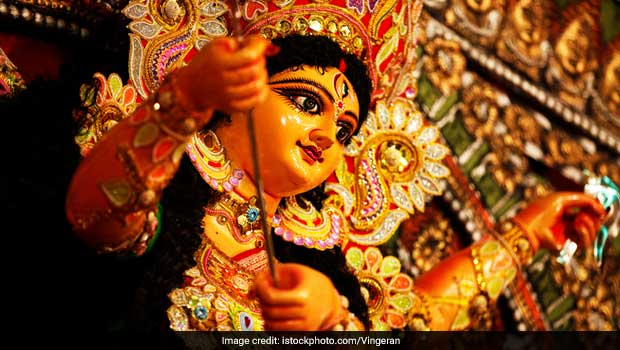
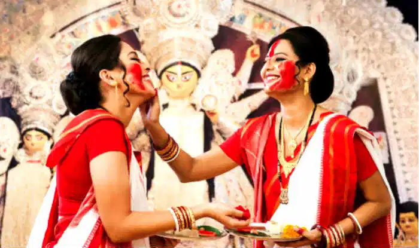
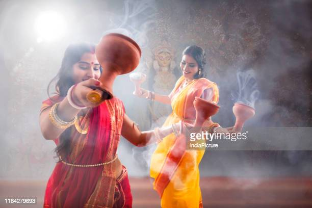
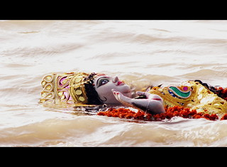

Durga Puja, or the annual celebration of hindu goddess Durga, is one of India's grandest festival. It is a multiple-day celebration varying from 6 days in some parts of the country to 10 days in others. In most of Northern India the festival is celebrated as Navratri (nine nights). Regardless of these variations, the last four
  days of Maha Saptami, Maha Ashtami, Maha Navami and Vijay Dashami, are particularly important and accordingly celebrated with much splendor around the country.
In most parts of the country, the festival commemorates the victory of the goddess over a demon called Mahishasura. As told by Hindu mythology, the demon was set out to wage war against the gods and it was up to Durga to slay him and protect earth. She began her battle against the demon on the seventh day of Navratri, known as Maha Saptami and slayed him by the final day of Vijay Dashami.
The goddess, known to Hindus as the ‘destroyer of evil’, is characterized by her ten arms carrying various lethal weapons, as well as her vehicle – the lion. Also known as Bhavani, Amba, Chandika, Gauri, Parvati, Mahishasuramardini, Durga is the ‘Mother goddess’ and the ‘Protector of the Righteous’ to Hindu devotees.
Though the festival is considered to date back to ancient times in the Hindu religion, the first historic record of such a celebration of the goddess is available from the 1500s in West Bengal. However, the festival is considered to have gained a lot of prominence and have emerged to its current status as one of the country’s largest festivals during the country’s independence movement. The goddess was considered by many to be an icon for the country and its freedom struggle.
  Today, the festival is celebrated with song and dance, fasting followed by feasts, elaborate decorations, and pujas or grand ceremonies at temples and religious recitals. In some parts of the country idols of the goddess are immersed in water, whereas in other parts of the country young girls dress as the goddess and partake in various rituals at temples and public celebrations.